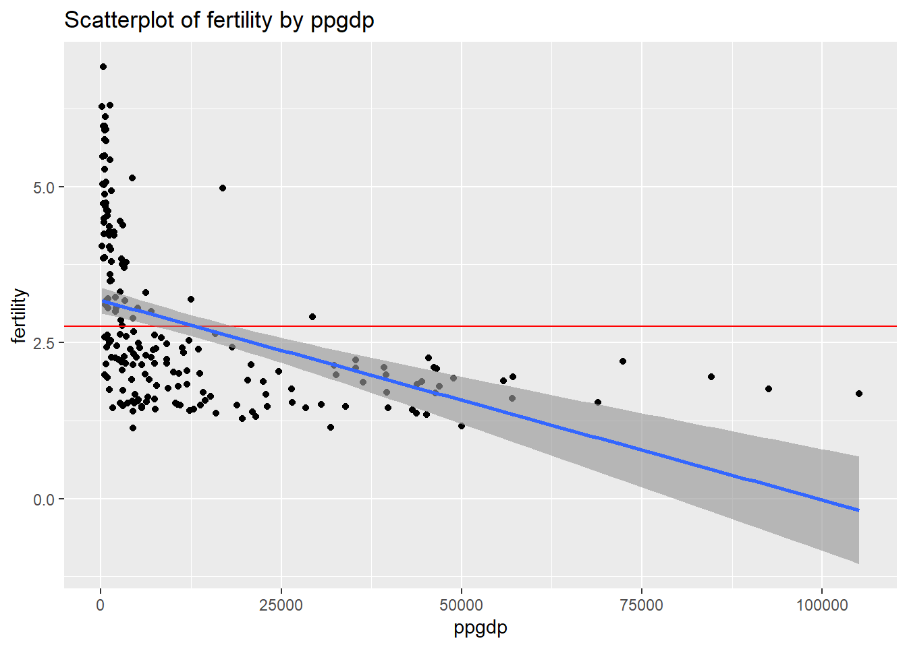
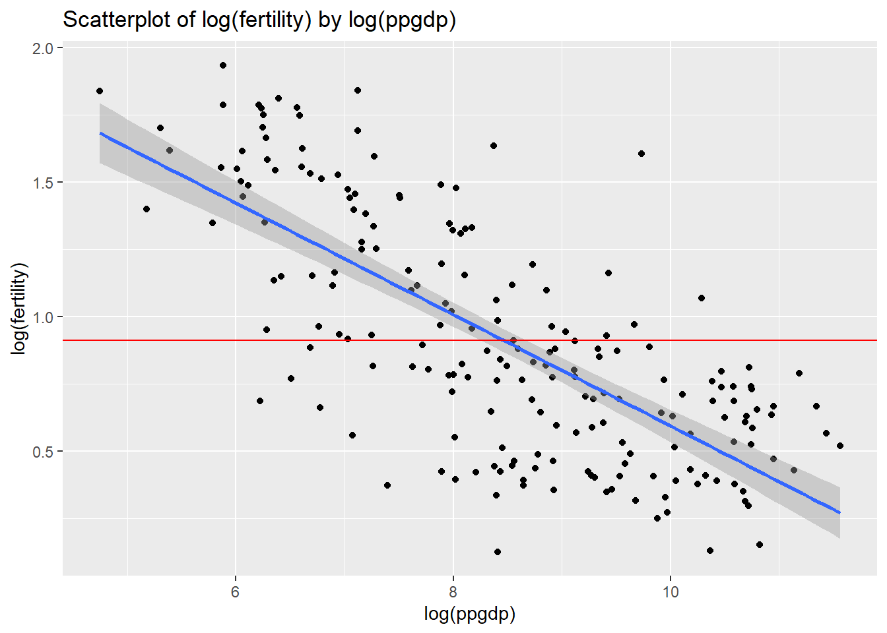
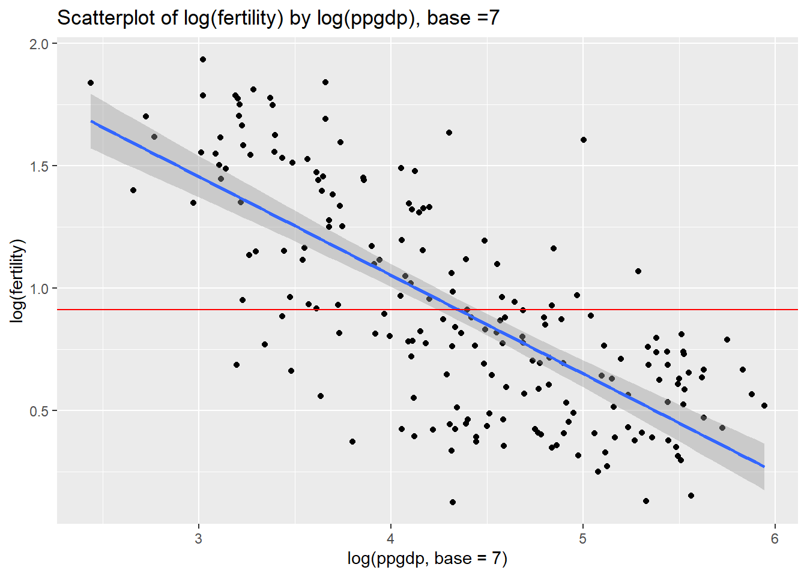
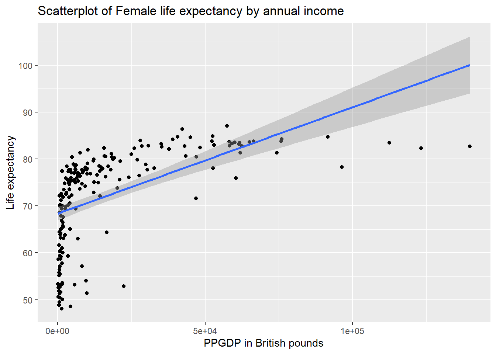
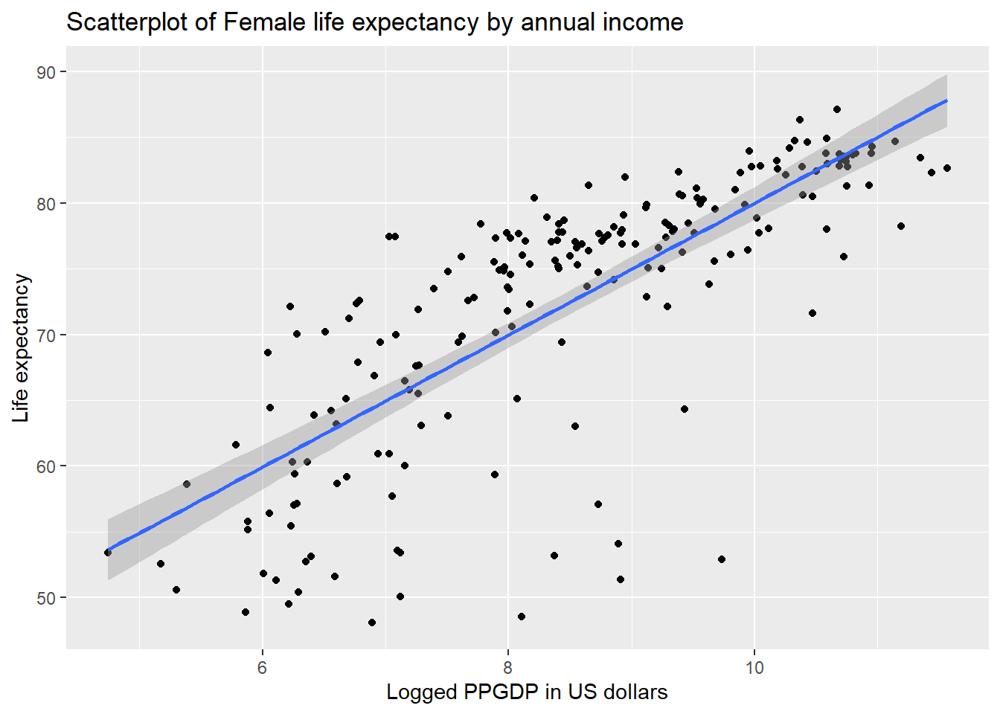
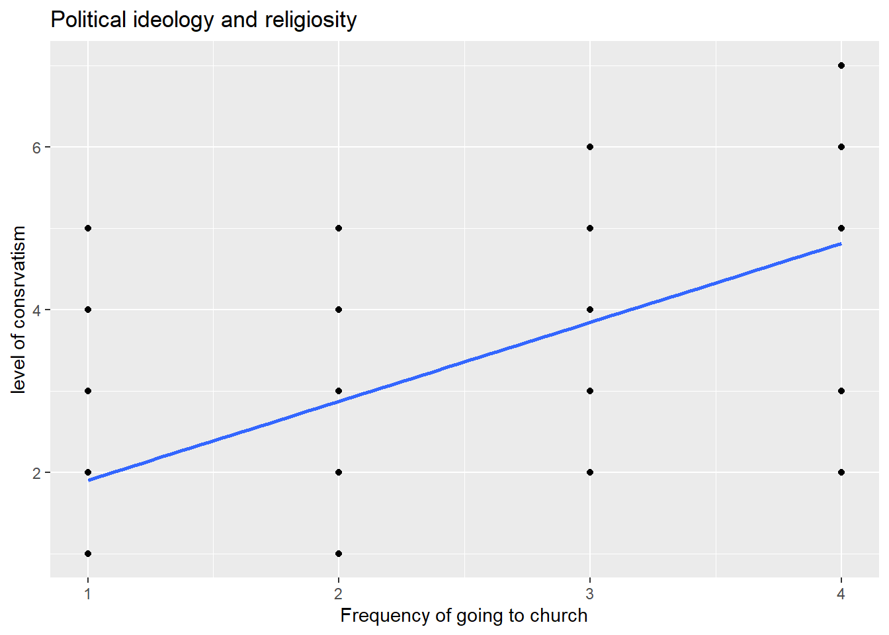
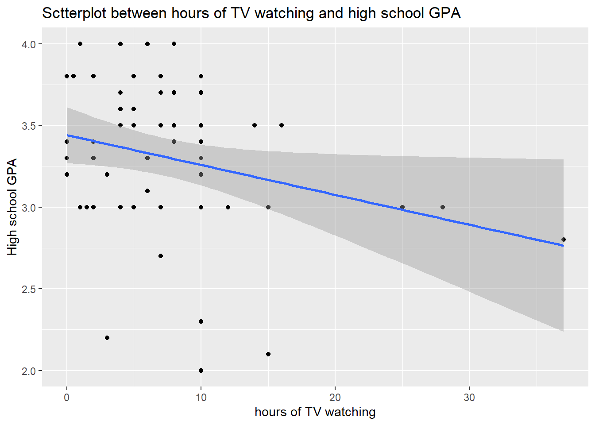

The following objects are masked from 'package:stats':
filter, lag
The following objects are masked from 'package:base':
intersect, setdiff, setequal, union
Code
library(ggplot2)library(alr4)
Loading required package: car
Loading required package: carData
Attaching package: 'car'
The following object is masked from 'package:dplyr':
recode
Loading required package: effects
lattice theme set by effectsTheme()
See ?effectsTheme for details.
Code
library(smss)
Question 1
United Nations (Data file: UN11 in alr4) The data in the file UN11 contains several variables, including ppgdp, the gross national product per person in U.S. dollars, and fertility, the birth rate per 1000 females, both from the year 2009. The data are for 199 localities, mostly UN member countries, but also other areas such as Hong Kong that are not independent countries. The data were collected from the United Nations (2011). We will study the dependence of fertility on ppgdp.
Identify the predictor and the response.
DV/response: fertility
IV/predictor: ppgdp
Draw the scatterplot of fertility on the vertical axis versus ppgdp on the horizontal axis and summarize the information in this graph. Does a straight-line mean function seem to be plausible for a summary of this graph?
ggplot(data=UN11, mapping=aes(x=ppgdp, y =fertility ))+geom_point()+stat_smooth(method ="lm", se = T)+geom_hline(yintercept =mean(UN11$fertility), color ="red")+labs(title="Scatterplot of fertility by ppgdp")+stat_smooth(method ="lm", se = T)
`geom_smooth()` using formula = 'y ~ x'
`geom_smooth()` using formula = 'y ~ x'

From the graph above it is obvious, that the straight line mean is not representative of the data. Even if be draw a linear model with “stat_smooth(method =”lm”, se = T)“, the line is still far from most datapoints ( which indicate high value of error in the model)
Draw the scatterplot of log(fertility) versus log(ppgdp) using natural logarithms. Does the simple linear regression model seem plausible for a summary of this graph? If you use a different base of logarithms, the shape of the graph won’t change, but the values on the axes will change.
Code
ggplot(data=UN11, mapping=aes(x=log(ppgdp), y =log(fertility) ))+geom_point()+stat_smooth(method ="lm", se = T)+geom_hline(yintercept =mean(log(UN11$fertility)), color ="red")+labs(title="Scatterplot of log(fertility) by log(ppgdp) ")
`geom_smooth()` using formula = 'y ~ x'

Simple linear regression seems much more plausible on this logged scatter plot.
Below, I am using different bases (5 and 7) of the logarithms. The shape of a line doesn’t change, only x-scale limits change:
Code
ggplot(data=UN11, mapping=aes(x=log(ppgdp, base =5), y =log(fertility), base =5 ))+geom_point()+stat_smooth(method ="lm", se = T)+geom_hline(yintercept =mean(log(UN11$fertility), base =5), color ="red")+labs(title="Scatterplot of log(fertility) by log(ppgdp) base =5 ")
`geom_smooth()` using formula = 'y ~ x'
Code
ggplot(data=UN11, mapping=aes(x=log(ppgdp, base =7), y =log(fertility), base =7))+geom_point()+stat_smooth(method ="lm", se = T)+geom_hline(yintercept =mean(log(UN11$fertility), base =7), color ="red")+labs(title="Scatterplot of log(fertility) by log(ppgdp), base =7 ")
`geom_smooth()` using formula = 'y ~ x'

Question 2
Annual income, in dollars, is an explanatory variable in a regression analysis. For a British version of the report on the analysis, all responses are converted to British pounds sterling (1 pound equals about 1.33 dollars, as of 2016).
(a) How, if at all, does the slope of the prediction equation change?
(b) How, if at all, does the correlation change?
To answer these questions, I will run linear regressions for the ppgpd in dollars and pounds and compare results.
Code
UN11$ppgdp.pound<-UN11$ppgdp*1.33fit1<-lm(lifeExpF ~ ppgdp, data = UN11)summary(fit1)
Call:
lm(formula = lifeExpF ~ ppgdp, data = UN11)
Residuals:
Min 1Q Median 3Q Max
-20.825 -4.889 2.618 6.619 11.299
Coefficients:
Estimate Std. Error t value Pr(>|t|)
(Intercept) 6.837e+01 7.370e-01 92.762 <2e-16 ***
ppgdp 3.018e-04 3.274e-05 9.218 <2e-16 ***
---
Signif. codes: 0 '***' 0.001 '**' 0.01 '*' 0.05 '.' 0.1 ' ' 1
Residual standard error: 8.483 on 197 degrees of freedom
Multiple R-squared: 0.3014, Adjusted R-squared: 0.2978
F-statistic: 84.98 on 1 and 197 DF, p-value: < 2.2e-16
Code
fit2<-lm(lifeExpF ~ ppgdp.pound, data = UN11)summary(fit2)
Call:
lm(formula = lifeExpF ~ ppgdp.pound, data = UN11)
Residuals:
Min 1Q Median 3Q Max
-20.825 -4.889 2.618 6.619 11.299
Coefficients:
Estimate Std. Error t value Pr(>|t|)
(Intercept) 6.837e+01 7.370e-01 92.762 <2e-16 ***
ppgdp.pound 2.269e-04 2.462e-05 9.218 <2e-16 ***
---
Signif. codes: 0 '***' 0.001 '**' 0.01 '*' 0.05 '.' 0.1 ' ' 1
Residual standard error: 8.483 on 197 degrees of freedom
Multiple R-squared: 0.3014, Adjusted R-squared: 0.2978
F-statistic: 84.98 on 1 and 197 DF, p-value: < 2.2e-16
Visualizing the model with both variables (ppgdp and ppgdp.pound ) produces the same model:
Code
ggplot( data=UN11, mapping=aes(x= ppgdp , y=lifeExpF))+geom_point() +geom_smooth(method ='lm')+labs(title="Scatterplot of Female life expectancy by annual income ", x="PPGDP in US dollars", y="Life expectancy")
`geom_smooth()` using formula = 'y ~ x'
Code
ggplot( data=UN11, mapping=aes(x= ppgdp.pound , y=lifeExpF))+geom_point() +geom_smooth(method ='lm')+labs(title="Scatterplot of Female life expectancy by annual income ", x="PPGDP in British pounds", y="Life expectancy")
`geom_smooth()` using formula = 'y ~ x'

Visualizing logged variables ( for the US dollars and British pounds) :
Code
ggplot( data=UN11, mapping=aes(x=log(ppgdp) , y=lifeExpF ) )+geom_point() +geom_smooth(method ='lm')+labs(title="Scatterplot of Female life expectancy by annual income ", x="Logged PPGDP in US dollars", y="Life expectancy")
`geom_smooth()` using formula = 'y ~ x'

Code
ggplot( data=UN11, mapping=aes(x=log(ppgdp.pound) , y=lifeExpF ) )+geom_point() +geom_smooth(method ='lm')+labs(title="Scatterplot of Female life expectancy by annual income ", x="Logged PPGDP in British pounds", y="Life expectancy")
`geom_smooth()` using formula = 'y ~ x'
There is no change in slope and correlation between variablle in US dollars and British pounds.
Code
fit_logged<-lm(lifeExpF~log(ppgdp), data = UN11)summary(fit_logged)
Call:
lm(formula = lifeExpF ~ log(ppgdp), data = UN11)
Residuals:
Min 1Q Median 3Q Max
-25.749 -2.879 1.280 3.987 12.345
Coefficients:
Estimate Std. Error t value Pr(>|t|)
(Intercept) 29.8148 2.5314 11.78 <2e-16 ***
log(ppgdp) 5.0188 0.2942 17.06 <2e-16 ***
---
Signif. codes: 0 '***' 0.001 '**' 0.01 '*' 0.05 '.' 0.1 ' ' 1
Residual standard error: 6.448 on 197 degrees of freedom
Multiple R-squared: 0.5964, Adjusted R-squared: 0.5943
F-statistic: 291.1 on 1 and 197 DF, p-value: < 2.2e-16
However, using log() function on x variable allowed us to build a better fitted model with R^2 increased from 0.30 to 0.60. I can conclude that 1% change in PPGDP correspons with 5 % increase in Life expectancy.
Question 3
Water runoff in the Sierras (Data file: water in alr4) Can Southern California’s water supply in future years be predicted from past data? One factor affecting water availability is stream runoff. If runoff could be predicted, engineers, planners, and policy makers could do their jobs
more efficiently. The data file contains 43 years’ worth of precipitation measurements taken at six sites in the Sierra Nevada mountains (labeled APMAM, APSAB, APSLAKE, OPBPC, OPRC, and OPSLAKE) and stream runoff volume at a site near Bishop, California, labeled BSAAM. Draw the scatterplot matrix for these data and summarize the information available from these plots. (Hint: Use the pairs() function.)
From the scatter plot matrix above I can see that some sources of water well correlated to each other, as their scatter plots are very close to a straight line. Moreover, there are two groups of water sources that demonstrate being inter-connected. The first group is APMAM, APSAB and APSLAKE. The second group is OPBPC, OPRC, OPLAKE and BSAAM. It is possible that the sites within a grouop share a water source or separated from each other (may be by mountains).
Professor ratings (Data file: Rateprof in alr4) In the website and online forum RateMyProfessors.com, students rate and comment on their instructors. Launched in 1999, the site includes millions of ratings on thousands of instructors. The data file includes the summaries of the ratings of 364 instructors at a large campus in the Midwest (Bleske-Rechek and Fritsch, 2011). Each instructor included in the data had at least 10 ratings over a several year period. Students provided ratings of 1–5 on quality, helpfulness, clarity, easiness of instructor’s courses, and rater Interest in the subject matter covered in the instructor’s courses. The data file provides the averages of these five ratings. Create a scatter plot matrix of these five variables. Provide a brief description of the relationships between the five ratings.
As we can see from the scatter plot above, three variables are clearly highly correlated: quality, helpfulness and clarity. Particularly, quality highly correlated with both helpfulness and clarity. I suspect, these variables might create multicollinearity problem if used together in multiple regression model.
Connection between clarity and helpfulness is also very distinct, but the variability seems bigger.
Easiness variable appears positively correlated with the first three (quality, helpfulness and clarity), however there is much higher variability.
Rater’s interest appears less connected with the other variables, and might demonstrate a smaller slope of a regression line when calculated.
Question 5
For the student.survey data file in the smss package, conduct regression analyses relating (by convention, y denotes the outcome variable, x denotes the explanatory variable)
(i) y = political ideology and x = religiosity,
(ii) y = high school GPA and x = hours of TV watching. (You can use ?student.survey in the R console, after loading the package, to see what each variable means.)
(a) Graphically portray how the explanatory variable relates to the outcome variable in each of the two cases
(b) Summarize and interpret results of inferential analyses.
i. y = political ideology and x = religiosity
By using ?student.survey function, I found out that : Political ideology is stored as PI variable, Religiosity doesn’t have its own variable, but can be represented as “how often you attend religious services” from this data set, variable RE
We can see that both variables are ordered factor variables. We will need to convert factor variables into the numeric variables for regression, and then use them in linear model:
Call:
lm(formula = pi ~ re, data = student.survey)
Residuals:
Min 1Q Median 3Q Max
-2.81243 -0.87160 0.09882 1.12840 3.09882
Coefficients:
Estimate Std. Error t value Pr(>|t|)
(Intercept) 0.9308 0.4252 2.189 0.0327 *
re 0.9704 0.1792 5.416 1.22e-06 ***
---
Signif. codes: 0 '***' 0.001 '**' 0.01 '*' 0.05 '.' 0.1 ' ' 1
Residual standard error: 1.345 on 58 degrees of freedom
Multiple R-squared: 0.3359, Adjusted R-squared: 0.3244
F-statistic: 29.34 on 1 and 58 DF, p-value: 1.221e-06
Code
ggplot(data = student.survey, aes(x = re, y = pi)) +geom_point() +geom_smooth(method ='lm', se=F)+labs(title="Political ideology and religiosity", x="Frequency of going to church", y ="level of consrvatism")
`geom_smooth()` using formula = 'y ~ x'

Based on the summary above, we can see that religiosity and political ideology are positively related, but the religiosity only contributes about 30 % of political ideology (R^2 =0.34). Overal w can say that higher level of conservatism can be somewhat (30%) predicted by frequency of church attendance.
ii. y = high school GPA and x = hours of TV watching
High school GPA is presented as HI variable, and hours of TV watching - by TV variable.
Code
class(student.survey$hi)
[1] "numeric"
Code
class(student.survey$tv)
[1] "numeric"
Both variables are numeric, which allows us to run a simple linear regression:
Code
summary(lm(data=student.survey, hi ~tv))
Call:
lm(formula = hi ~ tv, data = student.survey)
Residuals:
Min 1Q Median 3Q Max
-1.2583 -0.2456 0.0417 0.3368 0.7051
Coefficients:
Estimate Std. Error t value Pr(>|t|)
(Intercept) 3.441353 0.085345 40.323 <2e-16 ***
tv -0.018305 0.008658 -2.114 0.0388 *
---
Signif. codes: 0 '***' 0.001 '**' 0.01 '*' 0.05 '.' 0.1 ' ' 1
Residual standard error: 0.4467 on 58 degrees of freedom
Multiple R-squared: 0.07156, Adjusted R-squared: 0.05555
F-statistic: 4.471 on 1 and 58 DF, p-value: 0.03879
We can see that the the slope of Independent variable (tv) is very small and negative. It’s statistical significance is also very low and depends on alpha level that we select. R squared, which indicates the proportion of the variance that can be explained by x (tv watching time), is very low (0.072). Taking this into account, I conclude there is no contribution of TV watching to GPA level.
To visualize these relationship, we can build a scatter plot and a fitted linear line:
Code
ggplot (data=student.survey, mapping=aes(x=tv, y=hi))+geom_point()+stat_smooth(method ="lm", se = T)+labs(title="Sctterplot between hours of TV watching and high school GPA", y="High school GPA", x="hours of TV watching")
`geom_smooth()` using formula = 'y ~ x'

From the graph above we can see, that the standard error band is getting wider towards the right side of the chart, due to low amount of observations in that part of the sample. It also adds uncertainty to a conclusion and calls for more data and further investigation. Since the overall slope does go down, I would suggest that there may be another factor that contributes to the relationship between TV watching and GPA.
Source Code
---title: "Homework 3"author: "Diana Rinker"description: "HW3"date: "4/11/2023"format: html: toc: true code-fold: true code-copy: true code-tools: trueeditor: markdown: wrap: 72---# DACSS 603, spring 2023# Homework 3, Diana Rinker.Loading necessary libraries:```{r, echo=T}library(dplyr)library(ggplot2)library(alr4)library(smss)```# Question 1**United Nations (Data file: UN11 in alr4) The data in the file UN11contains several variables, including ppgdp, the gross national productper person in U.S. dollars, and fertility, the birth rate per 1000females, both from the year 2009. The data are for 199 localities,mostly UN member countries, but also other areas such as Hong Kong thatare not independent countries. The data were collected from the UnitedNations (2011). [We will study the dependence of fertility onppgdp.]{.underline}**(a) **Identify the predictor and the response.** DV/response: fertility IV/predictor: ppgdp(b) **Draw the scatterplot of fertility on the vertical axis versus ppgdp on the horizontal axis and summarize the information in this graph. Does a straight-line mean function seem to be plausible for a summary of this graph?**```{r, echo=T}data(UN11)str(UN11)ggplot(data=UN11, mapping=aes(x=ppgdp, y =fertility ))+geom_point()+stat_smooth(method ="lm", se = T)+geom_hline(yintercept =mean(UN11$fertility), color ="red")+labs(title="Scatterplot of fertility by ppgdp")+stat_smooth(method ="lm", se = T)```From the graph above it is obvious, that the straight line mean is notrepresentative of the data. Even if be draw a linear model with"stat_smooth(method ="lm", se = T)", the line is still far from mostdatapoints ( which indicate high value of error in the model)(c) **Draw the scatterplot of log(fertility) versus log(ppgdp) using natural logarithms. Does the simple linear regression model seem plausible for a summary of this graph? If you use a different base of logarithms, the shape of the graph won't change, but the values on the axes will change.**```{r, echo=T}ggplot(data=UN11, mapping=aes(x=log(ppgdp), y =log(fertility) ))+geom_point()+stat_smooth(method ="lm", se = T)+geom_hline(yintercept =mean(log(UN11$fertility)), color ="red")+labs(title="Scatterplot of log(fertility) by log(ppgdp) ")```Simple linear regression seems much more plausible on this loggedscatter plot.Below, I am using different bases (5 and 7) of the logarithms. The shapeof a line doesn't change, only x-scale limits change:```{r, echo=T}ggplot(data=UN11, mapping=aes(x=log(ppgdp, base =5), y =log(fertility), base =5 ))+geom_point()+stat_smooth(method ="lm", se = T)+geom_hline(yintercept =mean(log(UN11$fertility), base =5), color ="red")+labs(title="Scatterplot of log(fertility) by log(ppgdp) base =5 ")ggplot(data=UN11, mapping=aes(x=log(ppgdp, base =7), y =log(fertility), base =7))+geom_point()+stat_smooth(method ="lm", se = T)+geom_hline(yintercept =mean(log(UN11$fertility), base =7), color ="red")+labs(title="Scatterplot of log(fertility) by log(ppgdp), base =7 ")```# Question 2**Annual income, in dollars, is an explanatory variable in a regressionanalysis. For a British version of the report on the analysis, allresponses are converted to British pounds sterling (1 pound equals about1.33 dollars, as of 2016).****(a) How, if at all, does the slope of the prediction equationchange?****(b) How, if at all, does the correlation change?**To answer these questions, I will run linear regressions for the ppgpdin dollars and pounds and compare results.```{r, echo=T}UN11$ppgdp.pound<-UN11$ppgdp*1.33fit1<-lm(lifeExpF ~ ppgdp, data = UN11)summary(fit1)fit2<-lm(lifeExpF ~ ppgdp.pound, data = UN11)summary(fit2)```Visualizing the model with both variables (ppgdp and ppgdp.pound )produces the same model:```{r, echo=T}ggplot( data=UN11, mapping=aes(x= ppgdp , y=lifeExpF))+geom_point() +geom_smooth(method ='lm')+labs(title="Scatterplot of Female life expectancy by annual income ", x="PPGDP in US dollars", y="Life expectancy")ggplot( data=UN11, mapping=aes(x= ppgdp.pound , y=lifeExpF))+geom_point() +geom_smooth(method ='lm')+labs(title="Scatterplot of Female life expectancy by annual income ", x="PPGDP in British pounds", y="Life expectancy")```Visualizing logged variables ( for the US dollars and British pounds) :```{r, echo=T}ggplot( data=UN11, mapping=aes(x=log(ppgdp) , y=lifeExpF ) )+geom_point() +geom_smooth(method ='lm')+labs(title="Scatterplot of Female life expectancy by annual income ", x="Logged PPGDP in US dollars", y="Life expectancy")ggplot( data=UN11, mapping=aes(x=log(ppgdp.pound) , y=lifeExpF ) )+geom_point() +geom_smooth(method ='lm')+labs(title="Scatterplot of Female life expectancy by annual income ", x="Logged PPGDP in British pounds", y="Life expectancy")```There is no change in slope and correlation between variablle in USdollars and British pounds.```{r, echo=T}fit_logged<-lm(lifeExpF~log(ppgdp), data = UN11)summary(fit_logged)```However, using log() function on x variable allowed us to build a betterfitted model with R\^2 increased from 0.30 to 0.60. I can conclude that1% change in PPGDP correspons with 5 % increase in Life expectancy.# Question 3Water runoff in the Sierras (Data file: water in alr4) Can SouthernCalifornia's water supply in future years be predicted from past data?One factor affecting water availability is stream runoff. If runoffcould be predicted, engineers, planners, and policy makers could dotheir jobsmore efficiently. The data file contains 43 years' worth ofprecipitation measurements taken at six sites in the Sierra Nevadamountains (labeled APMAM, APSAB, APSLAKE, OPBPC, OPRC, and OPSLAKE) andstream runoff volume at a site near Bishop, California, labeled BSAAM.Draw the scatterplot matrix for these data and summarize the informationavailable from these plots. (Hint: Use the pairs() function.)```{r, echo=T}library(alr4)data(water)str(water)head(water)water$Year <-as.factor(water$Year)levels(water$Year)pairs(subset (water, select =c(APMAM : BSAAM)))```From the scatter plot matrix above I can see that some sources of waterwell correlated to each other, as their scatter plots are very close toa straight line. Moreover, there are two groups of water sources thatdemonstrate being inter-connected. The first group is APMAM, APSAB andAPSLAKE. The second group is OPBPC, OPRC, OPLAKE and BSAAM. It ispossible that the sites within a grouop share a water source orseparated from each other (may be by mountains).```{r, echo=T}head(water)pairs(subset (water, select =c(APMAM : APSLAKE)))``````{r, echo=T}head(water)pairs(subset (water, select =c(OPBPC : BSAAM)))```# Question 4Professor ratings (Data file: Rateprof in alr4) In the website andonline forum RateMyProfessors.com, students rate and comment on theirinstructors. Launched in 1999, the site includes millions of ratings onthousands of instructors. The data file includes the summaries of theratings of 364 instructors at a large campus in the Midwest(Bleske-Rechek and Fritsch, 2011). Each instructor included in the datahad at least 10 ratings over a several year period. Students providedratings of 1--5 on quality, helpfulness, clarity, easiness ofinstructor's courses, and rater Interest in the subject matter coveredin the instructor's courses. The data file provides the averages ofthese five ratings. Create a scatter plot matrix of these fivevariables. Provide a brief description of the relationships between thefive ratings.```{r, echo=T}data(Rateprof)str(Rateprof)head(Rateprof)pairs(subset (Rateprof, select =c(quality : raterInterest)))```As we can see from the scatter plot above, three variables are clearlyhighly correlated: quality, helpfulness and clarity. Particularly,quality highly correlated with both helpfulness and clarity. I suspect,these variables might create multicollinearity problem if used togetherin multiple regression model.Connection between clarity and helpfulness is also very distinct, butthe variability seems bigger.Easiness variable appears positively correlated with the first three(quality, helpfulness and clarity), however there is much highervariability.Rater's interest appears less connected with the other variables, andmight demonstrate a smaller slope of a regression line when calculated.------------------------------------------------------------------------# Question 5For the student.survey data file in the smss package, conduct regressionanalyses relating (by convention, y denotes the outcome variable, xdenotes the explanatory variable)\(i\) y = political ideology and x = religiosity,\(ii\) y = high school GPA and x = hours of TV watching. (You can use?student.survey in the R console, after loading the package, to see whateach variable means.)\(a\) Graphically portray how the explanatory variable relates to theoutcome variable in each of the two cases\(b\) Summarize and interpret results of inferential analyses.#### i. y = political ideology and x = religiosityBy using ?student.survey function, I found out that : Political ideologyis stored as `PI` variable, Religiosity doesn't have its own variable,but can be represented as "how often you attend religious services" fromthis data set, variable `RE`Therefore , my model can be presented as$$PI =\beta_o +\beta_1*RE$$```{r, echo=T}data(student.survey)?student.surveystr(student.survey)# head(student.survey)class(student.survey$pi)levels(student.survey$pi)class(student.survey$re)```We can see that both variables are ordered factor variables. We willneed to convert factor variables into the numeric variables forregression, and then use them in linear model:```{r, echo=T}student.survey$pi <-as.numeric (student.survey$pi)student.survey$re <-as.numeric (student.survey$re)summary(lm(pi~re, data=student.survey))ggplot(data = student.survey, aes(x = re, y = pi)) +geom_point() +geom_smooth(method ='lm', se=F)+labs(title="Political ideology and religiosity", x="Frequency of going to church", y ="level of consrvatism")```Based on the summary above, we can see that religiosity and politicalideology are positively related, but the religiosity only contributesabout 30 % of political ideology (R\^2 =0.34). Overal w can say thathigher level of conservatism can be somewhat (30%) predicted byfrequency of church attendance.#### ii. y = high school GPA and x = hours of TV watchingHigh school GPA is presented as HI variable, and hours of TV watching -by TV variable.```{r, echo=T}class(student.survey$hi)class(student.survey$tv)```Both variables are numeric, which allows us to run a simple linearregression:```{r, echo=T}summary(lm(data=student.survey, hi ~tv))```We can see that the the slope of Independent variable (tv) is very smalland negative. It's statistical significance is also very low and dependson alpha level that we select. R squared, which indicates the proportionof the variance that can be explained by x (tv watching time), is verylow (0.072). Taking this into account, I conclude there is nocontribution of TV watching to GPA level.To visualize these relationship, we can build a scatter plot and afitted linear line:```{r, echo=T}ggplot (data=student.survey, mapping=aes(x=tv, y=hi))+geom_point()+stat_smooth(method ="lm", se = T)+labs(title="Sctterplot between hours of TV watching and high school GPA", y="High school GPA", x="hours of TV watching")```From the graph above we can see, that the standard error band is gettingwider towards the right side of the chart, due to low amount ofobservations in that part of the sample. It also adds uncertainty to aconclusion and calls for more data and further investigation. Since theoverall slope does go down, I would suggest that there may be anotherfactor that contributes to the relationship between TV watching and GPA.------------------------------------------------------------------------